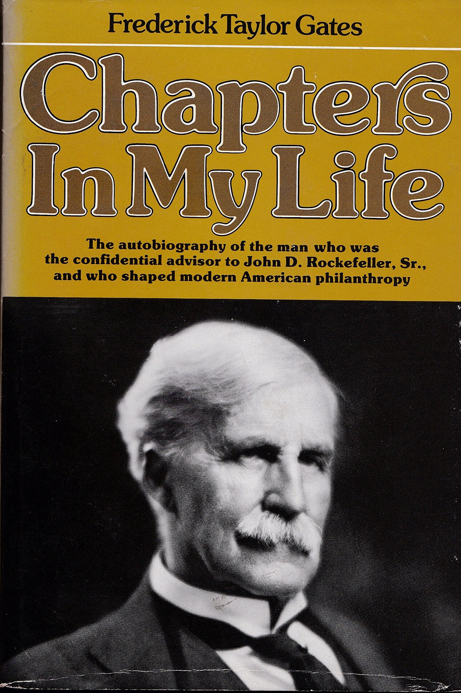

弗雷德里克·泰勒·盖茨（Frederick Taylor Gates, 1853—1929）是美国浸信会牧师出身的商业与慈善顾问，自1891年起担任约翰·D. 洛克菲勒的首席幕僚长达三十余年。这本自传写于1928年，盖茨去世前一年，1977年由Free Press出版，附有Robert Swain Morison撰写的导言。书中以坦率的第一人称视角，记录了一位没有任何商业教育背景和商业经验的浸信会牧师，如何成为洛克菲勒口中"他一生遇到过的最伟大的商人"——在洛克菲勒看来，盖茨胜过亨利·福特和安德鲁·卡内基。
盖茨1877年毕业于罗切斯特大学，1880年完成罗切斯特神学院的学业后，在明尼阿波利斯担任了八年浸信会牧师。离开牧职后，他出任美国浸信会教育协会秘书，着力推动在芝加哥创办一所浸信会大学。1889年1月，盖茨在筹款过程中与洛克菲勒初次会面，并设计出一套筹资方案，说服洛克菲勒拿出巨资，催生了芝加哥大学的诞生。洛克菲勒对盖茨的组织才能印象深刻，随即邀请他迁往纽约，全权协助管理自己的"慈善事务"。
盖茨在书中详细记述了他如何将洛克菲勒的慈善从零散的个人施予，转变为系统化的"科学捐赠"——不再向个人和地方小慈善机构零售式地分发善款，而是通过经过审核的公共机构进行批发式的大规模投入，瞄准社会问题的根源而非表面症状。这一理念催生了一系列前所未有的制度安排：1901年，盖茨说服洛克菲勒创办洛克菲勒医学研究所（今洛克菲勒大学），使之成为美国第一个专门从事实验医学的研究中心，迄今已产生二十七位诺贝尔奖得主；1902年，盖茨参与创建通识教育委员会（General Education Board），并于1907至1917年担任主席，系统性地推动美国南方的教育改革；1909年，盖茨主导成立洛克菲勒卫生委员会，发起大规模的钩虫病根除运动；1913年，洛克菲勒基金会正式成立，盖茨出任董事——这是人类历史上第一个永久性的大规模私人基金会，其规模和理念开创了现代慈善的范式。
盖茨不仅是慈善架构师，同时也是精明的商业操盘手。书中用大量篇幅描述了他如何管理洛克菲勒的实业投资。他接手梅萨比铁矿（Mesabi Range）后，购入更多矿区土地，整修铁路，建造矿石码头，经过八年运营，将整个矿山、铁路、船队和码头设施以约五千五百万美元的利润出售给J.P. 摩根的美国钢铁公司。他还为洛克菲勒管理铁路、制造业和矿业等多元投资，在每一个领域都展现出与其牧师出身全然不符的商业判断力。
《穷查理宝典》编者、Glenair公司CEO彼得·考夫曼（Peter Kaufman）是这本书最热忱的推广者。他在Farnam Street的"最常赠送的书"专栏中推荐此书时写道："查理·芒格说，极端的结果——无论好坏——往往最具教育意义。这本回忆录详尽记录了一个极端的好结果：一位没有任何商业教育或商业经验的浸信会牧师，如何被约翰·D. 洛克菲勒赞誉为他所遇到过的最伟大的商人，胜过亨利·福特和安德鲁·卡内基。"2020年1月，考夫曼在Redlands Forum发表题为"An Unsung Hero"的演讲，专门讲述盖茨的故事，称他是"历史上影响力最大却最不为人知的人物之一"。考夫曼还曾将此书寄给比尔·盖茨和沃伦·巴菲特，据他在演讲中透露，两人都回信表示"这是我见过的关于慈善最发人深省的书"。
这本书之所以值得今天的读者——尤其是关注商业、投资与长期思维的中国读者——认真阅读，在于它呈现了一个极为罕见的案例：一个人如何仅凭清晰的头脑、极致的勤奋和对根本问题的穿透力，在完全陌生的领域达到最高水准。盖茨没有商学院学位，没有家族背景，没有行业人脉，他的武器只有系统性思考和不知疲倦的学习能力——据书中记述，他曾用三个月每天十八小时自学两年的希腊语课程以获得大学入学资格。这种从第一性原理出发、不受既有框架约束的思维方式，与查理·芒格所倡导的多学科思维模型有着深刻的共鸣。